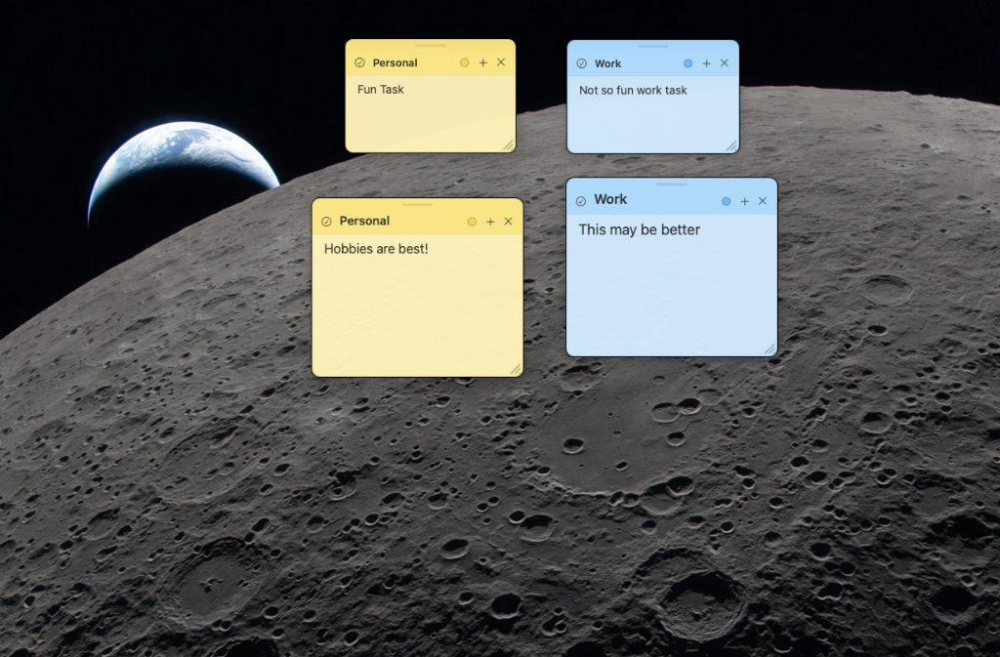

True Wallpaper Pinning
Pinned to desktopIconWindow + 1 with .stationary and .canJoinAllSpaces. Stickies stay behind every normal app window and remain glued to your wallpaper during Mission Control and Show Desktop.
Pin color-coded to-do stickies, resizable pictures, and freehand drawings strictly to the macOS desktop layer—always behind your open apps, always there when you show your desktop, and light enough to forget it’s running.

Drag stickies, edit notes, click ✓ to cross them off, pin a Picture, or click Draw to sketch arrows & doodles directly on the wallpaper.
Pinned to desktopIconWindow + 1 with .stationary and .canJoinAllSpaces. Stickies stay behind every normal app window and remain glued to your wallpaper during Mission Control and Show Desktop.
Written in pure Swift & AppKit—no Electron, no WebView, zero third-party packages. Runs as a menu bar accessory with no Dock clutter.
Group Work, Personal, Ideas, Urgent, or Errands with inline editable top titles and 6 curated sticky palettes.
Click ✓ on any sticky to strike through its title and text with subtle dimming—and clear all completed stickies from the menu bar in one click.
Press ⌥⇧D anywhere to draw arrows between stickies or doodle directly on your wallpaper. Choose from 8 pen colors, resize the tip (2–24 pt), or swipe strokes away with the stroke eraser.
Pin any image from disk or paste straight from your clipboard as its own sticky. Corner resizing locks the image’s aspect ratio automatically, and files are stored safely inside the app’s data folder.
Drag a selection box on the wallpaper or ⌘+Click stickies to move, resize, and adjust font sizes together in lockstep.
Stickies, drawings, and images persist automatically in Application Support/StickitToTheMax. Toggle Launch at Login straight from the menu bar via native SMAppService.
Install in seconds with the ready-to-use DMG—no Xcode, no Terminal required. Requires macOS 13.0 or later.
First launch note: if macOS Gatekeeper prompts you, right-click StickitToTheMax.app → Open (or run xattr -cr /Applications/StickitToTheMax.app).
Grab the 391 KB StickitToTheMax-1.0.0.dmg installer above.
Open the DMG and drop StickitToTheMax.app into your Applications folder.
Launch the app, click the menu bar note icon, and toggle Launch at Login.
Clone the repository and compile a self-contained StickitToTheMax.app bundle or .dmg locally with zero external dependencies.
git clone https://github.com/flup-repo/StickitToTheMax.git
cd StickitToTheMax
./scripts/create-dmg.sh
open build/StickitToTheMax-1.0.0.dmg